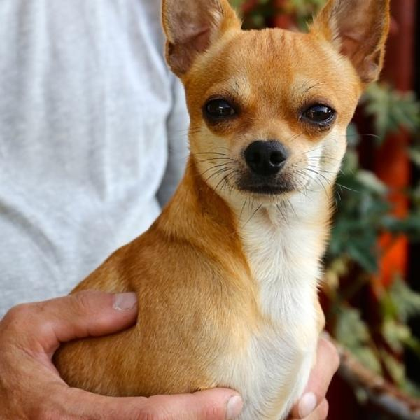

Imagenes de Perros


Lista de Perros
Cosas que los perros
aman
- Comer pollo
- Jugar
- Correr
Cosas que los perros odian
- Los ruidos fuertes
- Cortarles las uñas
- Los abrazos
Si quieres ver vídeos de perros da clic aquí
FORMULARIOS
¿Tu perrito es cachorro o adulto?
¿Que tipo de perro es el tuyo?